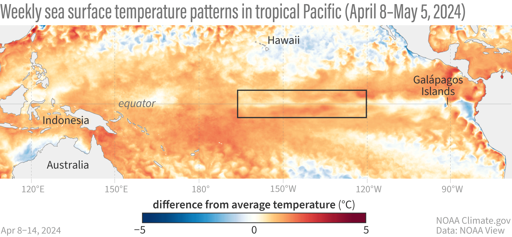
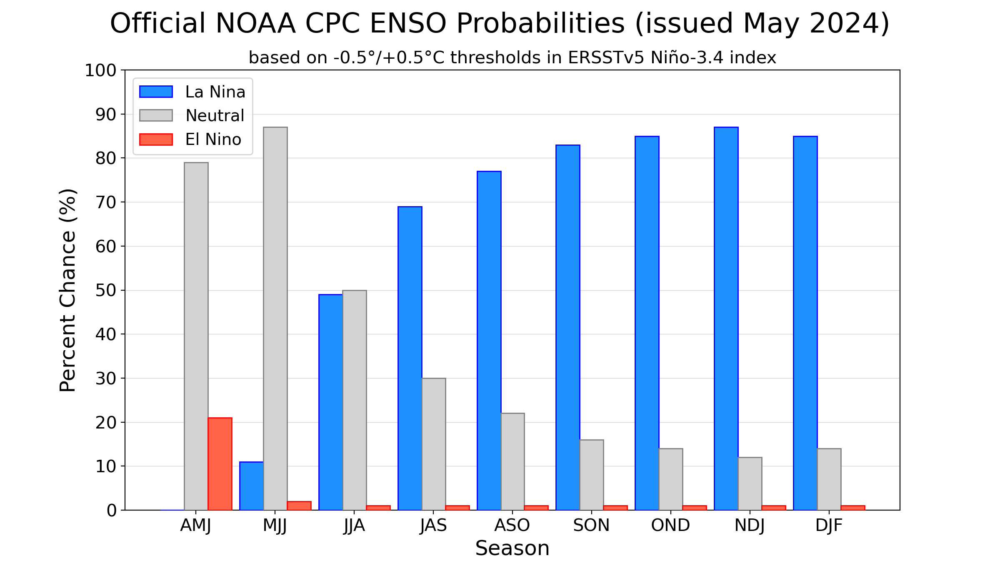
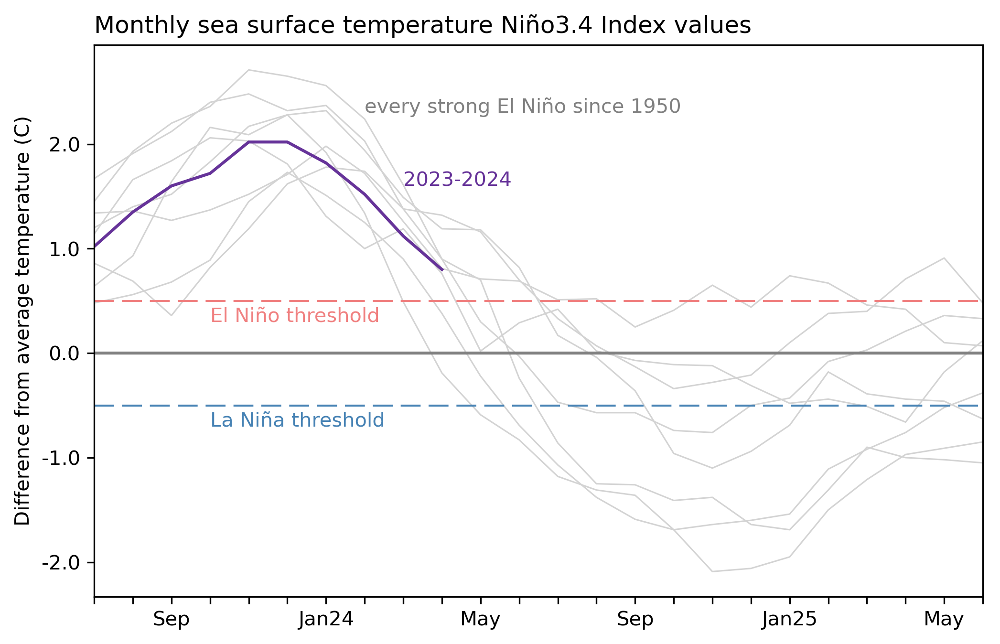

May 2024 ENSO update: we’re 10!
BY EMILY BECKER PUBLISHED MAY 9, 2024 COMMENTS: 13

El Niño weakened substantially over the past month, and we think a transition to neutral conditions is imminent. There’s a 69% chance that La Niña will develop by July–September (and nearly 50-50 odds by June-August). Let’s kick off the ENSO Blog’s tin anniversary with our 121st ENSO outlook update!
Hang 10
There was some discussion this week amongst our ENSO forecast team about whether El Niño, much weakened already early last month, is still present. El Niño is a coupled system, meaning the ocean and atmosphere both exhibit characteristic changes. The atmospheric half of El Niño is harder to detect this month; most of the standard equatorial Pacific atmospheric indicators (rain and clouds over the tropical Pacific, trade winds and upper-level winds) were pretty close to average. However, the April average sea surface temperature in the tropical Pacific was still 0.8 °C above average according to the ERSSTv5 dataset (average = 1991–2020). The latest weekly measurement, which comes from the OISSTv2 dataset, was 0.5 °C above average. Given that the El Niño threshold is 0.5 °C, the team decided we’re right on the edge of the transition to neutral conditions. We also can’t rule out some lingering El Niño impacts in other regions of the world.

Animation of maps of sea surface temperatures in the Pacific Ocean compared to the long-term average over five-day periods from April through early May 2024. El Niño’s warm surface has weakening and a region of cooler-than-average sea surface temperature has appeared. NOAA Climate.gov, based on Coral Reef Watch maps available from NOAA View.
Once this El Niño ends, it's likely that our spell of neutral conditions won’t be a long one, with La Niña expected to develop by the late summer and last through the early winter at least.

NOAA Climate Prediction Center forecast for each of the three possible ENSO categories for the next 8 overlapping 3-month seasons. Blue bars show the chances of La Niña, gray bars the chances for neutral, and red bars the chances for El Niño. Graph by Michelle L'Heureux.
We’ve seen a quick switch from El Niño to La Niña several times before in our 1950–present record, especially after a strong El Niño. This tendency is one source of confidence in the prediction that La Niña will develop later this year.

2-year history of sea surface temperatures in the Niño-3.4 region of the tropical Pacific for all strong El Niño events since 1950 (gray lines) and the current event (purple line). Graph by Emily Becker based on monthly Niño-3.4 index data from CPC usingERSSTv5.
Other factors that provide confidence that La Niña is on the way include forecasts from computer climate models and cooler-than-average waterunder the surfaceof the tropical Pacific.
10-count
Even if the sea surface temperature in the tropical Pacific lingers near the El Niño threshold for a few weeks, it’s unlikely that there will be noticeable El Niño impacts on global climate conditions this coming summer. Nat looked at how the winter turned out in the US in his recent post, but El Niño causes changes in rain and temperature patterns all around the world, with related impacts on drought, food supplies, and flooding. You can look at El Niño and La Niña’s global patterns of temperature and rain/snow throughout the seasonshere.